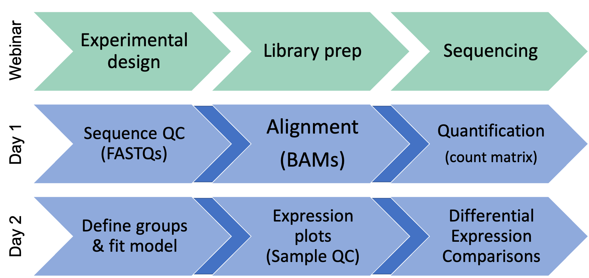
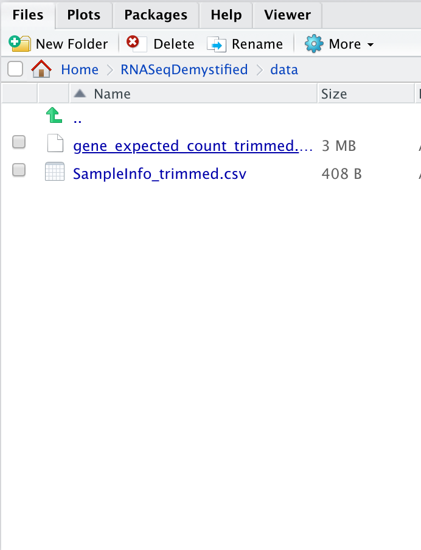

Day 2 - Module 06: Analysis Setup & Introduction to DESeq2
UM Bioinformatics Core
2021-08-08

Objectives:
- Overview of reproducible research & analysis setup
- Broad introduction to DESeq2 & why it is widely used for differential expression comparisons
- How to import and review gene count table
1 Differential Expression Workflow
Today we will proceed through key steps in a differential expression analysis, starting from a count table that’s similar to what would have been generated on Day 1.
| Step | Task |
|---|---|
| 1 | Experimental Design |
| 2 | Biological Samples / Library Preparation |
| 3 | Sequence Reads |
| 4 | Assess Quality of Raw Reads |
| 5 | Splice-aware Mapping to Genome |
| 6 | Count Reads Associated with Genes |
| — | — |
| 7 | Organize project files locally |
| 8 | Initialize DESeq2 and fit DESeq2 model |
| 9 | Assess expression variance within treatment groups |
| 10 | Specify pairwise comparisons and test for differential expression |
| 11 | Generate summary figures for comparisons |
| 12 | Annotate differential expression result tables |
TODO: Update summary/orientation figure
TODO: Add back in per module summaries (might be in markdown files from last workshop)
2 Tools for Differential Gene Expression analysis
As discussed during the webinar, a common application for bulk RNA-seq is to test for differential expression between conditions or treatments, using statistical approaches that are appropriate for biological data.
While there are several tools that can be used for differential expression comparisons, we use DESeq2 in our analysis today. DESeq2 is one of two tools, along with EdgeR, considered ‘best practice’ for differential expression, as both tools apply similar methods that account for the distributions we expect to see for RNA-seq and are fairly stringent in calling differentially expressed genes, lowering the risk of investigating genes that were really false positives.
Additionally, DESeq2 also has an this excellent vignette click to open from Love, Anders, and Huber from which our workflow is partially adapted and is a good resource when analyzing your own data (see also: Love, Anders, and Huber. Genome Biology. 2014.).
Click for additional resources regarding statistical testing and tool comparison for RNA-seq data
To learn more about statistical testing and what distributions best model the behavior of RNA-seq data, a good resource is this EdX lecture by Rafael Irizarry or this lecture by Kasper Hansen. Another helpful guide is this Comparative Study for Differential Expression Analysis by Zhang et al. from 2014.2.1 DESeq2 assumptions and requirements
A key assumption is that for most experiments biological variance is much greater than technical variance, especially if best practices for quality RNA isolation are followed (including DNase treatment!).
Since variance is key to the statistical approach used for DESeq2, if you try to compare treatment groups with less than two replicates, DESeq2 will give you an error, as shown in this blog post. Without replicates, statistical significance (i.e. p-values) cannot be calculated, but qualitative approaches like looking at the top expressed genes after normalization are an option.
2.1.1 Replicates in RNA-seq experiments
A question we are frequently asked is “How many replicates do I need?” As mentioned in the seminar, there is often more contributing to the observed gene expression in each sample than the experimental treatment or condition.

Image of technical, biological, and experimental contributors to gene expression, from HBC training materials
The general goal of differential expression analysis to seperate the “interesting” biological contributions from the “uninteresting” technical or extraneous contributions that either cannot be or were not controlled in the experimental design. The more sources of variation, such as samples coming from heterogenous tissues or experiments with incomplete knockdowns, the more replicates (>3) are recommended.
For a more in depth discussion of experimental design considerations, particularly for the number of replicates, please review A Beginner’s Guide to Analysis of RNA Sequencing Data and papers like this one by Hart et al that focus on estimating statistical power for RNA-seq experiments.
2.1.1.1 Sequencing depth recommendations
A related aspect to consider for experimental design is how much sequencing depth should be generated per sample. This figure shared by Illumina in their technical talks is helpful to understand the relative importance of sequencing depth versus number of replicates.

Illumina’s differential expression recovery across replicate number and sequencing depth
Generally, for the human and mouse genomes, the general recommendation is 30-40 million reads per sample if measuring the ~20,000 protein-coding genes (i.e.: polyA library prep) to capture both highly expressed (common) and more lowly expresssed (rarer) transcripts. However, as the image above shows, sequencing depth has less of an impact than number of replicates in detecting differentially expressed genes (DEGs).
2.2 #### [Exercise]
- Post a question about differential expression analysis that we haven’t addressed
- OR Add a reaction to your favorite question(s)
TODO: Orienting around button use/getting help - red x vs slow down vs green check usages TODO: Explain can ask for a breakout at any time but will have points in lesson plan to catch up TODO: Re-orient around breakout rooms
3 Reproducible Research
Today we’ll be exploring some RNA-seq data that is fairly representative of what we see in the core and start with input files similar to the count tables currently being delivered by the Advanced Sequencing Core.
To get started, we’ll open up our RStudio console and set up for our analysis. 
To organize our files for our analysis today we’ll create a new folder, ideally in our home directory, using the ‘New Folder’ button on the right side of our screen & naming it 2021-08-09-umich-rnaseq-demystified. Then we’ll set our working directory using the drop down menu under the More icon. This can also be accomplished as code:
dir.create("~/2021-08-09-umich-rnaseq-demystified", showWarnings = FALSE)
setwd("~/2021-08-09-umich-rnaseq-demystified")getwd()Checkpoint: Please use the grey slow down button in your zoom reaction panel if you are not in your own ‘2021-08-09-umich-rnaseq-demystified’ directory after executing the getwd() commands.
Once we confirm our working directory, we’ll create a new folder within 2021-08-09-umich-rnaseq-demystified called data to store our raw data by copying & pasting the following command.
dir.create("data", showWarnings = FALSE)Checkpoint: Please use the ‘green check’ if you see ‘data’ within your ‘2021-08-09-umich-rnaseq-demystified’ directory and use the ‘grey slow down’ button in your zoom reaction panel if you’d like the steps repeated
TODO: Confirm/test URL for download of new input files… currently on unmerged branch of repo
Next, we’ll download the files we’ll need for today by copying and pasting the follow.
### TO DO: ENSURE THESE URLS ARE CORRECT
download.file("https://raw.githubusercontent.com/umich-brcf-bioinf/rnaseq_demystified_workshop_2021/DMK_changes/data/Day2Data/SampleInfo_trimmed.csv", "data/SampleInfo_trimmed.csv")
download.file("https://raw.githubusercontent.com/umich-brcf-bioinf/rnaseq_demystified_workshop_2021/DMK_changes/data/Day2Data/gene_expected_count_trimmed.txt", "data/gene_expected_count_trimmed.txt")3.1 Best practices for file organization
While your data downloads, file organization is an important part of reproducible research. To follow best practices for file organization for bioinformatics/computational projects, we will need to make sure there are separate locations for: * Raw data * Code * Output files

This figure from Nobel, 2009 shows an example of more complex organization structure that also includes documention and the paper presenting the results from the analysis.
If we look within our ‘data’ folder, we should now see two files:
 REPLACE: Fix this screenshot.
Checkpoint: Please use the ‘grey slow down’ button button if you don’t see the files after clicking on the “data” directory so I can repeat the steps. If you have successfully downloaded the data then used the ‘green check’ button.
4 Setting up our analysis
Following best practices, we will create a code file that will record all our commands and will be saved in a separate location from our raw data.
4.1 Creating our code file
To create a new code file, use the toolbar at the top of our window and click the icon that looks like white square with a small green plus symbol. From the drop down menu, select the first option named ‘R Script’.
TODO: Add screen shot highlighting ‘new file’ button
A new window should pop up in your console. We’ll then use the blue floppy disc icon save our ‘Untitled1’ file as “RNASeqAnalysis”.
TODO: Add screen shot highlighting ‘save’ button
This new “RNASeqAnalysis.R” will serve as a record of our analysis and should be saved in a separate location from our raw data, such as our current working directory of 2021-08-09-umich-rnaseq-demystified.
Note: This code file can also serve as a starting point for working through differential expression comparisons with other example datasets or your own data in the future.
An important note is that there are several bonus content sections on the instruction pages, like the two below that we will not be covering in this workshop, but that may have useful context or be helpful when you review this material.
4.1.0.1 Code execution shortcut reminder
Ctrl-Enter is a standard shortcut in Rstudio to send the current line (or selected lines) to the console. If you see an >, then R has executed the command. If you see a +, this means that the command is not complete and R is waiting (usually for a )).
Click for review of R conventions for object names
R has some restrictions for naming objects: * Cannot start with numbers * Cannot include dashes * Cannot have spaces * Should not be identical to a named function * Dots & underscores will work but are better to avoid4.2 Check package installations
Several packages have already been installed on the server, so we can load them into our R session now. To do that we’ll use the library function to load the required packages.
library(DESeq2)
library(ggplot2)
library(tidyr)
library(matrixStats)
library(ggrepel)
library(pheatmap)
library(RColorBrewer)
library(data.table)Note: Expect to see some red messages in your console while these packages are loading
As discussed in the computation foundations/prerequsite sessions, R/RStudio has great resources for getting help, including code ‘cheatsheets’ and package vignettes, like for tidyr.
We previously loaded several libraries into our R session, we can check the tools documentation out using the ? operator.
?`DESeq2-package`Checkpoint: If you see the R documentation for DESeq2 pop up in your ‘help’ panel on the right, please indicate with the green ‘check’ button. If not please use the grey ‘slow down’ button.
4.2.1 Raw data as input
Another key assumption for DESeq2 is that the analysis will start with un-normalized counts.
To begin our analysis, we’ll read in the raw count data file, gene_expected_count_trimmed.txt which is similar to what would be generated in the alignment steps yesterday (and what you could receive from AGC). We’ll discuss later a few normalizations that can be helpful for us to understand how much a gene is expressed within or between samples, but normalized data should not be used as an input for DESeq2.
CountTable <- read.table("data/gene_expected_count_trimmed.txt", header = TRUE, row.names = 1)
head(CountTable) # look at the top of the table## Sample_116498 Sample_116499 Sample_116500 Sample_116501 Sample_116502 Sample_116503
## ENSMUSG00000000001 8256 6680 7532 5122 6684 8047
## ENSMUSG00000000003 0 0 0 0 0 0
## ENSMUSG00000000028 226 244 199 193 293 382
## ENSMUSG00000000031 1 2 2 0 2 0
## ENSMUSG00000000037 29 11 22 16 13 15
## ENSMUSG00000000049 0 0 1 8 4 2
## Sample_116504 Sample_116505 Sample_116506 Sample_116507 Sample_116508 Sample_116509
## ENSMUSG00000000001 6446 5559 5443 5906 5771 4792
## ENSMUSG00000000003 0 0 0 0 0 0
## ENSMUSG00000000028 2297 2138 2344 2357 2531 2225
## ENSMUSG00000000031 9 5 2 1 8 12
## ENSMUSG00000000037 32 51 54 28 25 31
## ENSMUSG00000000049 2 0 3 4 1 0Now that the file is read into R, note that we’ve created a data frame that includes ‘gene ids’ in ENSEMBL format as rownames and count data from twelve different samples.
TODO: Possibly convert to group exercise or move to next module
If we think back to the ‘expected_counts’ RSEM output, the values in the count table are likely not integers (due to how the alignment tool resolves reads that map to multiple locuses). Since DESeq2 requires whole numbers, if we try to use the RSEM ouputs without rounding the estimated counts to a whole number first, DESeq2 will give us an error. To resolve this, we’ll round down all the columns of our CountTable that include count data (all columns since we set the gene names to be our row names).
tail(CountTable) # not all whole numbers## Sample_116498 Sample_116499 Sample_116500 Sample_116501 Sample_116502 Sample_116503
## ENSMUSG00000118573 1.76 0.00 0.00 0.00 0.00 0.00
## ENSMUSG00000118574 0.00 0.00 0.00 0.00 0.00 0.00
## ENSMUSG00000118575 0.00 0.00 0.00 0.00 0.00 0.00
## ENSMUSG00000118576 3.00 0.00 1.00 1.00 1.00 5.00
## ENSMUSG00000118577 752.33 613.24 417.04 412.63 429.74 553.50
## ENSMUSG00000118578 34.49 20.58 12.10 14.88 14.05 34.62
## Sample_116504 Sample_116505 Sample_116506 Sample_116507 Sample_116508 Sample_116509
## ENSMUSG00000118573 0.00 2.29 0.00 0.00 0.43 0.71
## ENSMUSG00000118574 0.00 0.00 0.00 0.00 0.00 0.00
## ENSMUSG00000118575 0.00 0.00 0.00 0.00 0.00 0.00
## ENSMUSG00000118576 3.00 1.00 2.00 0.00 0.00 2.00
## ENSMUSG00000118577 479.16 825.36 520.06 383.61 404.31 353.35
## ENSMUSG00000118578 18.57 14.01 11.14 4.69 11.81 7.74CountTable <- floor(CountTable)
tail(CountTable) # now whole numbers## Sample_116498 Sample_116499 Sample_116500 Sample_116501 Sample_116502 Sample_116503
## ENSMUSG00000118573 1 0 0 0 0 0
## ENSMUSG00000118574 0 0 0 0 0 0
## ENSMUSG00000118575 0 0 0 0 0 0
## ENSMUSG00000118576 3 0 1 1 1 5
## ENSMUSG00000118577 752 613 417 412 429 553
## ENSMUSG00000118578 34 20 12 14 14 34
## Sample_116504 Sample_116505 Sample_116506 Sample_116507 Sample_116508 Sample_116509
## ENSMUSG00000118573 0 2 0 0 0 0
## ENSMUSG00000118574 0 0 0 0 0 0
## ENSMUSG00000118575 0 0 0 0 0 0
## ENSMUSG00000118576 3 1 2 0 0 2
## ENSMUSG00000118577 479 825 520 383 404 353
## ENSMUSG00000118578 18 14 11 4 11 7TODO:Possibly move clickable notes up or add more clear summary to end so they get less lost
Click for alternative DESeq2 input options for RSEM outputs
The package tximport is another optionrecommended the DESeq2 authors to read in the RSEM expected_counts, as this package allows for the average transcript length per gene to be used in the DE analysis and, as described by the author, the tximport-to-DESeqDataSet constructor function round the non-integer data generated by RSEM to whole numbers.
Click for comparison of RNA-seq data and microarray data
With higher sensitivity, greater flexiblity, and decreasing cost, sequencing has largely replaced microarray assays for measuring gene expression. A key difference between the platforms is that microarrays measure intensities and are therefore continous data while the count data from sequencing is discrete. A more detailed comparison between microarrays and sequencing technologies/analysis is outlined in the online materials for Penn State’s STAT555 course
Once we have our count data processed, we can move on to “unblinding” our data, as the sample names are unique identifiers generated by a sequencing center and not very informative as far as our experimental conditions.
5 Sources
5.1 Training resources used to develop materials
- HBC DGE setup: https://hbctraining.github.io/DGE_workshop/lessons/01_DGE_setup_and_overview.html
- HBC Count Normalization: https://hbctraining.github.io/DGE_workshop/lessons/02_DGE_count_normalization.html
- DESeq2 standard vignette: http://bioconductor.org/packages/devel/bioc/vignettes/DESeq2/inst/doc/DESeq2.html
- DESeq2 beginners vignette: https://bioc.ism.ac.jp/packages/2.14/bioc/vignettes/DESeq2/inst/doc/beginner.pdf
- Bioconductor RNA-seq Workflows: https://www.bioconductor.org/help/course-materials/2015/LearnBioconductorFeb2015/B02.1_RNASeq.html
- CCDL Gastric cancer training materials: https://alexslemonade.github.io/training-modules/RNA-seq/03-gastric_cancer_exploratory.nb.html
- CCDL Neuroblastoma training materials: https://alexslemonade.github.io/training-modules/RNA-seq/05-nb_cell_line_DESeq2.nb.html
These materials have been adapted and extended from materials listed above. These are open access materials distributed under the terms of the Creative Commons Attribution license (CC BY 4.0), which permits unrestricted use, distribution, and reproduction in any medium, provided the original author and source are credited.